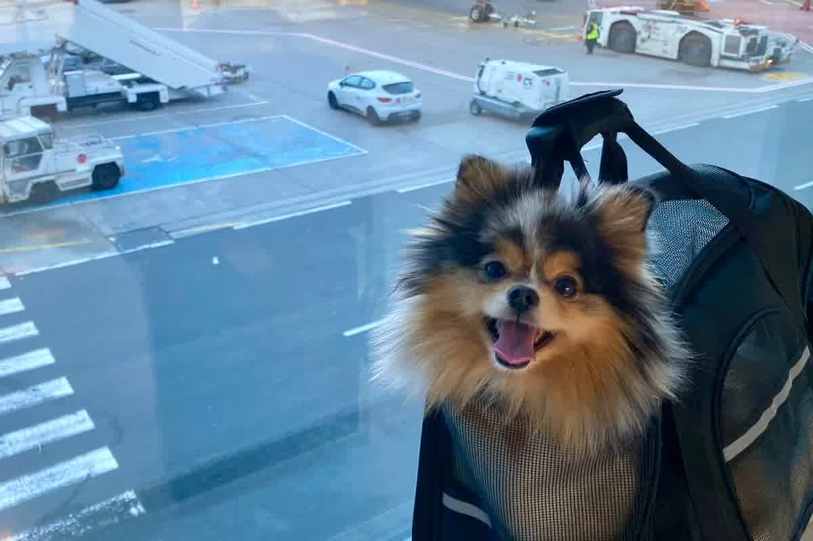
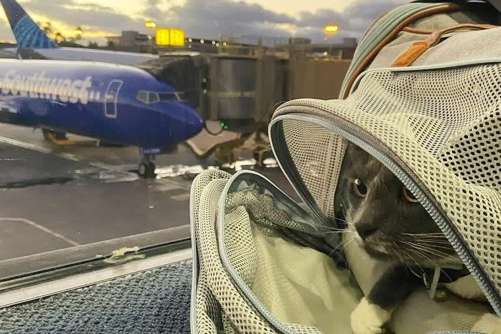

Viajar con mascotas a Australia exige 180 días tras RNATT, permiso, país aprobado y cuarentena en Mickleham. Criterio clínico y documental desde Perú.

Australia tiene el proceso más estricto del mundo porque Perú no es un país aprobado por su autoridad (DAFF): no se puede importar directo. La mascota debe trasladarse primero a un país aprobado, cumplir allí los plazos y recién entonces postular a Australia. El esquema exige microchip ISO, titulación RNATT/FAVN, un período de espera y una cuarentena obligatoria de 10 días a la llegada en la estación de Mickleham (Melbourne), con permiso de importación previo. Por la vía del país intermedio, el proceso completo suele tomar varios meses.
Un caso hacia Australia se define por una sola palabra: bioseguridad. El país no negocia el riesgo de rabia ni de parásitos exóticos, y por eso el expediente se construye hacia atrás desde fechas obligatorias, no desde la fecha del vuelo. Quien busca viajar con mascotas a Australia desde Perú suele subestimar el tramo de seis meses, el periodo de 180 días tras la serología y la cuarentena de ingreso en instalaciones del gobierno.
En Trujillo vemos el mismo patrón cuando el plan nace tarde: el propietario compra pasajes y recién después intenta acomodar la serología, el permiso y la reserva de cuarentena. El calendario de Australia funciona al revés. La autoridad australiana lo dice con claridad en su guía de importación: se debe considerar un mínimo de seis meses para completar el proceso, incluso con un expediente bien llevado.
Australia no busca “certificados bonitos”. Busca evidencia de reducción de riesgo. Su enfoque se basa en análisis de riesgo de bioseguridad y en condiciones de importación estrictas, publicadas por el propio gobierno. La idea central es evitar la entrada de enfermedades que el país no tiene o que mantiene bajo control, con énfasis en rabia, parásitos y agentes que afectarían fauna nativa y producción agropecuaria.
Ese enfoque tiene dos consecuencias prácticas. La primera: no todos los países son elegibles para exportar directamente. La guía oficial advierte que algunos países no están aprobados para importar perros o gatos a Australia, y en esos casos se exige completar pasos en un país aprobado antes de que el animal pueda viajar. La segunda: el expediente se audita como una cadena; un error en identidad o en fechas no se “arregla” en el aeropuerto.
En la práctica clínica, el punto donde se rompe la cadena es la expectativa. En rutas simples dentro de América Latina, el expediente suele depender de una ventana corta de certificado y de un endoso. Australia agrega residencia sanitaria documentada. Ese cambio obliga a pensar en meses, no en días.

El gobierno australiano exige una prueba de titulación de anticuerpos antirrábicos (RNATT) y establece un periodo mínimo de 180 días antes de exportar desde países del grupo 3. Su guía lo expresa sin ambigüedad: no hay excepciones a ese periodo de 180 días, y lo define como un periodo de residencia, no como cuarentena. Ese detalle importa porque el reloj corre aunque el animal esté sano y aunque el vuelo esté disponible.
El RNATT no se toma en cualquier momento. Debe realizarse después de una vacunación antirrábica válida, con identificación verificable. Si la identidad no está asentada antes de la toma de muestra, el expediente puede quedar fuera de elegibilidad para plazos más cortos de cuarentena, según el propio material oficial y guías de autoridades veterinarias que implementan la verificación de identidad previa a la serología.
La gente se confunde con el “seis meses”. El proceso completo puede exceder seis meses, pero el mínimo duro es el de 180 días desde que la muestra llega al laboratorio para RNATT. La guía oficial recalca que ese tramo es mandatorio. En un caso que parte desde Perú sin preparación previa, ese periodo define la fecha más temprana posible, incluso antes de hablar de reservas o certificados.
Australia opera un sistema de permiso de importación y un centro de cuarentena de ingreso (Post-Entry Quarantine) en Mickleham, cerca de Melbourne. La autoridad explica que perros y gatos deben pasar por cuarentena en una instalación del gobierno. El viaje no termina al aterrizar; recién ahí empieza el tramo de aislamiento supervisado, con su logística propia.
La duración de cuarentena depende del grupo de país y de condiciones adicionales. En su sección de preguntas frecuentes, el gobierno australiano indica que animales de países del grupo 3 requieren un mínimo de 30 días de cuarentena, con posibilidad de 10 días si se cumplen criterios específicos, como una verificación de identidad por la autoridad competente antes del RNATT. Esa diferencia crea un incentivo claro: cuando el expediente se arma con trazabilidad desde el inicio, el calendario puede acortarse dentro de lo permitido.
En consulta, el problema no suele ser “aprobar” la cuarentena; es conseguir el espacio y llegar con el expediente en regla. Un permiso sin respaldo documental se rechaza o se demora. Una reserva de cuarentena sin un calendario compatible con el RNATT termina reprogramándose. Australia no trabaja con aproximaciones, trabaja con fechas que se auditan.
La primera decisión es de ruta y elegibilidad: confirmar si el país de salida es aprobado y en qué grupo cae el caso, porque eso define el tipo de guía aplicable y el tramo de cuarentena. Cuando un país no está aprobado, el propietario necesita una estrategia realista, con escala sanitaria en un país aprobado, y ese cambio reordena presupuesto, tiempos y manejo clínico.
Luego se arma la cronología de rabia y RNATT con el objetivo de proteger el periodo de 180 días. La muestra no se toma “cuando haya cita”; se toma cuando la identidad está cerrada y la vacuna está en orden, para no correr el riesgo de invalidar elegibilidad. Esa lógica es la que evita reinicios que cuestan meses, porque el reloj de 180 días reinicia desde la última muestra válida que llega al laboratorio.
El tercer punto es trabajar el caso como un expediente, no como un trámite. Permiso, reserva de Mickleham y certificado final se sostienen sobre la misma cadena de identidad y fechas. En Perú, en particular, conviene consolidar cada documento antes de pasar al siguiente. En Trujillo eso se traduce en visitas clínicas programadas, revisión de registros y coordinación con el circuito oficial que endosa la salida.
Un error de secuencia en un caso a Australia suele convertirse en seis meses extra por el reinicio del periodo de 180 días desde la última muestra válida. En Zoovet Travel revisamos identidad, cronología antirrábica y RNATT, y armamos el expediente que sostiene permiso y salida desde Perú. El valor no está en una lista, está en un calendario defendible ante control.
Cada viaje con mascota es único. Estas son las dudas más comunes — y por qué siempre recomendamos consultar tu situación particular.
No. Cada país establece sus propias exigencias: vacunas, pruebas de laboratorio, certificaciones oficiales y tiempos de espera que en muchos casos no pueden acortarse bajo ninguna circunstancia. Lo que es válido para un destino puede ser insuficiente o incluso incompatible con otro. Antes de iniciar cualquier trámite, evalúa tu caso con nosotros.
No. Las políticas varían por aerolínea, ruta, tipo de aeronave y temporada, y cambian con frecuencia. Las razas braquicéfalas enfrentan restricciones adicionales en la mayoría de compañías internacionales. Antes de comprar tu pasaje, consulta la compatibilidad exacta para tu ruta y mascota.
Depende del destino. Algunos protocolos incluyen pruebas de laboratorio con períodos de espera obligatorios que no se pueden comprimir. Iniciar tarde puede invalidar documentación ya obtenida o forzar a reprogramar el viaje completo. Escríbenos y calculamos juntos tu cronograma real.
El animal puede quedar retenido en instalaciones del aeropuerto, ser enviado a cuarentena obligatoria a cargo del propietario, o ser repatriado. En destinos con bioseguridad estricta las consecuencias pueden ser aún más graves. La verificación documental antes del viaje es la única forma de evitar este escenario. Contáctanos antes de viajar.